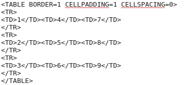

Edit Options¶
The Edit menu contains standard copy and paste options as one would expect. It also has options for creating LaTeX code, as the program was designed to do, and export to specialized formats.
Copy Selected, Copy All, & Paste Options¶
These are your usual options for clipboard transfer to and from the grid. Copy Selected copies the currently selected portion of the table as tab delimited text to the clipboard. Copy All does the same but with the entire grid. Paste will paste in tab delimited text to the table at the currently selected position. With the paste option, if what is being pasted at the current position needs more space, rows or columns, the grid will automatically resize itself to fit the added content.
Copy as LaTeX¶
The Copy as LaTeX option will create LaTeX code for the current grid contents using the options you have selected in the LaTeX Options box. This code is automatically copied to the clipboard so you can paste it into your LaTeX document. Details about what these options do is discussed in the LaTeX Export Options section. For example, if you use a long table with the default options the program would put the following into the clipboard.
% Package: \usepackage{longtable}
\begin{longtable}[l]{lll}
1 & 4 & 7 \\
2 & 5 & 8 \\
3 & 6 & 9 \\
\end{longtable}
Paste from LaTeX¶
There is also an option to paste from LaTeX code, Shift+Ctrl+L or using the menu option Edit > Paste from LaTeX. This will take the body of LaTeX code, extract the cell entries, and load the data into the grid. As with exporting to LaTeX code the entire grid is replaced with the data, not just the selection. For example, if you had the following table,
\begin{longtable}[l]{lll}
1 & 4 & 7 \\
2 & 5 & 8 \\
3 & 6 & 9 \\
\end{longtable}
and then copied the body portion to the clipboard, not including the begin and end statements, that is,
1 & 4 & 7 \\
2 & 5 & 8 \\
3 & 6 & 9 \\
then select Shift+Ctrl+L or Edit > Paste from LaTeX the program would extract the contents into the grid,
1 4 7
2 5 8
3 6 9
This option will also parse through hline code but will not process multicolumn commands and some other specialized content.
Copy as SageMath¶
The Copy as SageMath will formulate the grid as a SageMath matrix. For example, the standard grid
1 4 7
2 5 8
3 6 9
will copy as
matrix(QQ,[[1,4,7],[2,5,8],[3,6,9]])
Copy as Maxima¶
The Copy as Maxima will formulate the grid as a Maxima matrix. For example, the standard grid
1 4 7
2 5 8
3 6 9
will copy as
matrix([1,4,7],[2,5,8],[3,6,9])
Copy as Mathematica¶
The Copy as Mathematica will formulate the grid as a Mathematica matrix, that is { } delimited. For example, the standard grid
1 4 7
2 5 8
3 6 9
copies as
{{1,4,7},{2,5,8},{3,6,9}}
Copy […] Delimited¶
This copies as [ ] delimited string. For example, the standard grid
1 4 7
2 5 8
3 6 9
copies as
[[1,4,7],[2,5,8],[3,6,9]]
Copy {…} Delimited¶
This copies as { } delimited string. For example, the standard grid
1 4 7
2 5 8
3 6 9
copies as
{{1,4,7},{2,5,8},{3,6,9}}
Copy <…> Delimited¶
This copies as < > delimited string. For example, the standard grid
1 4 7
2 5 8
3 6 9
copies as
<<1,4,7>,<2,5,8>,<3,6,9>>
Copy as HTML¶
This copies the table to HTML markup. For example, the standard grid
1 4 7
2 5 8
3 6 9
copies as
Undo & Redo¶
The program also has undo and redo features, using the menu or the standard Ctrl+Z and Ctrl+Shift+Z respectively. Every time the grid is changed the undo history is updated with the new grid. The program does not limit the number of undos that are possible.